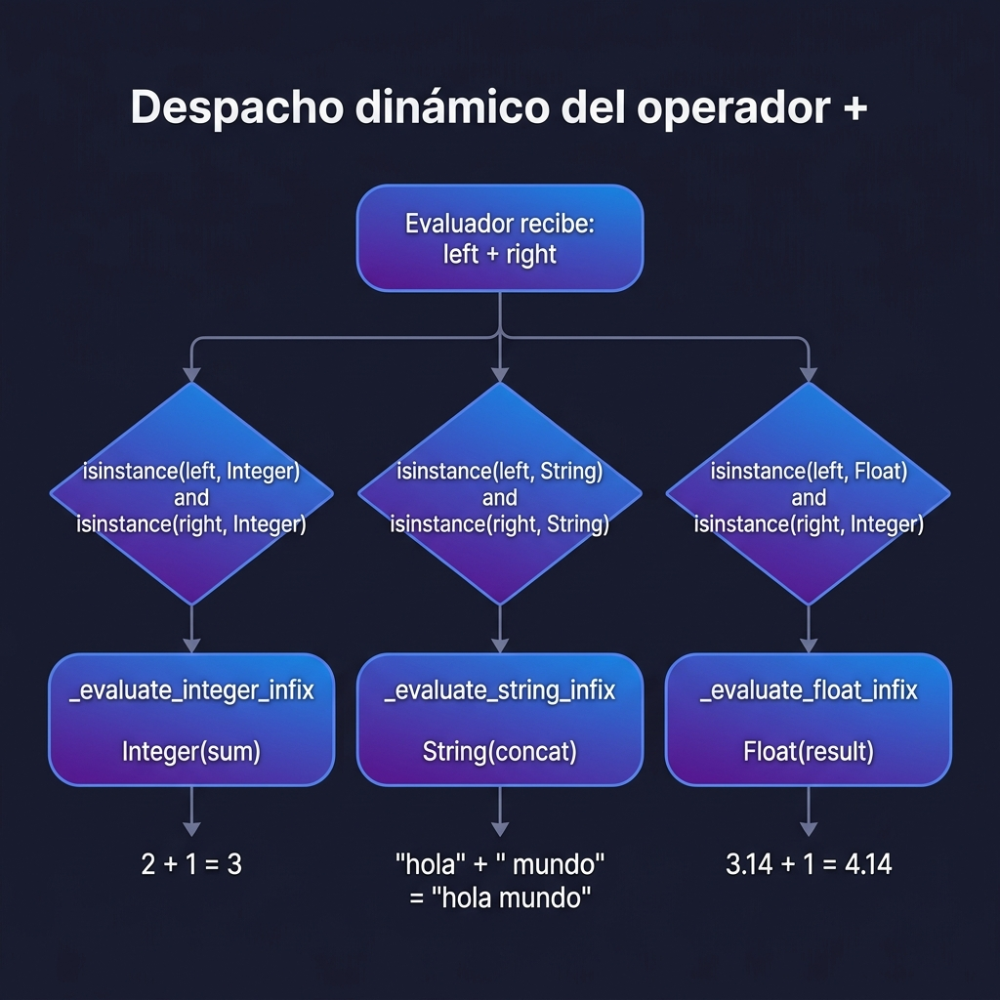
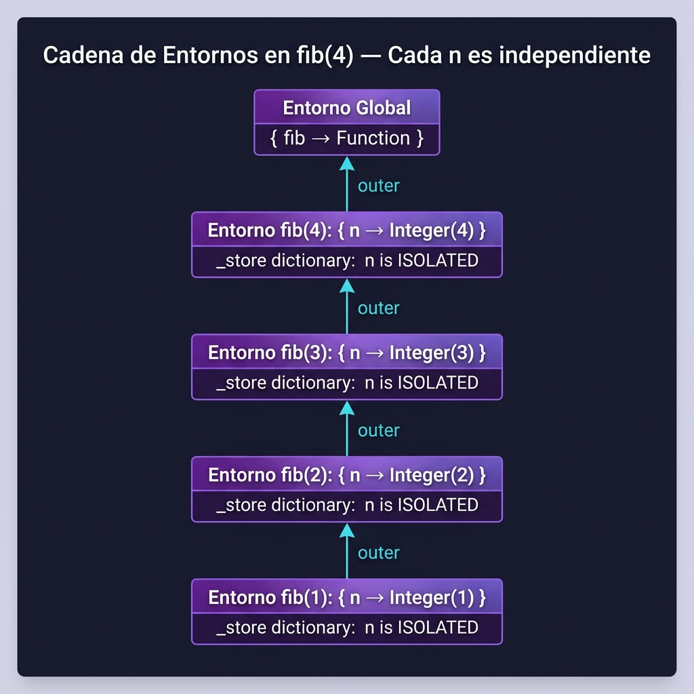
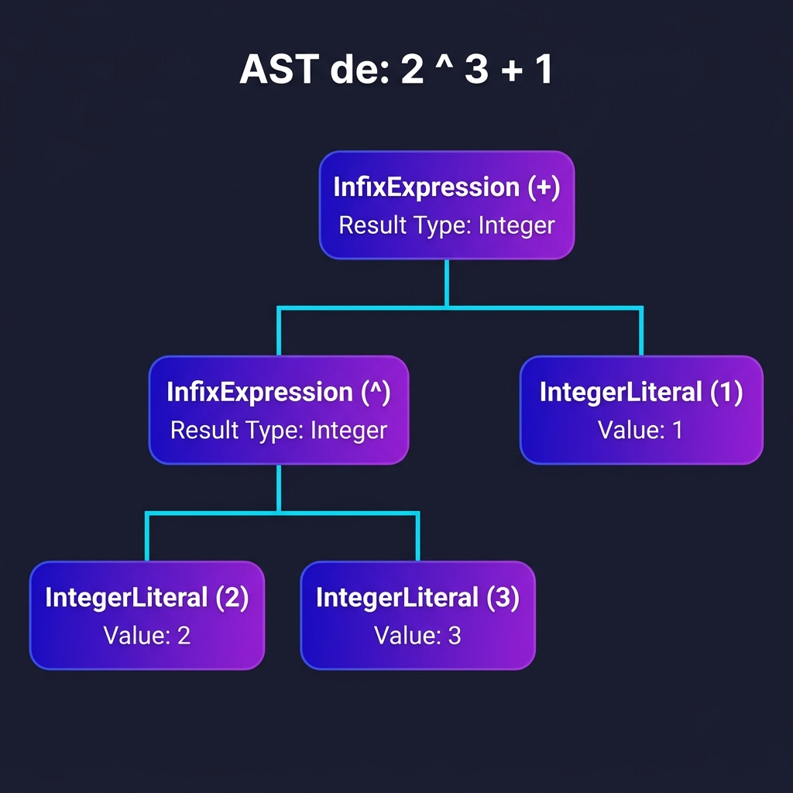
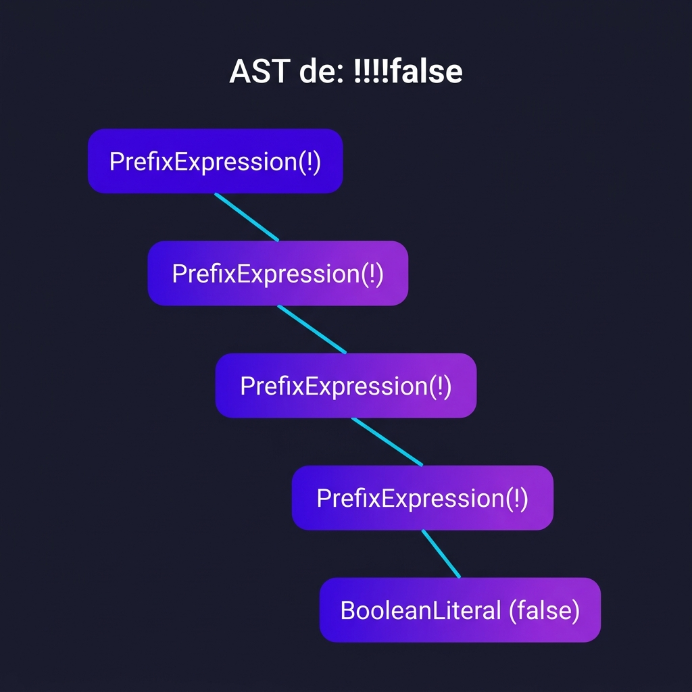
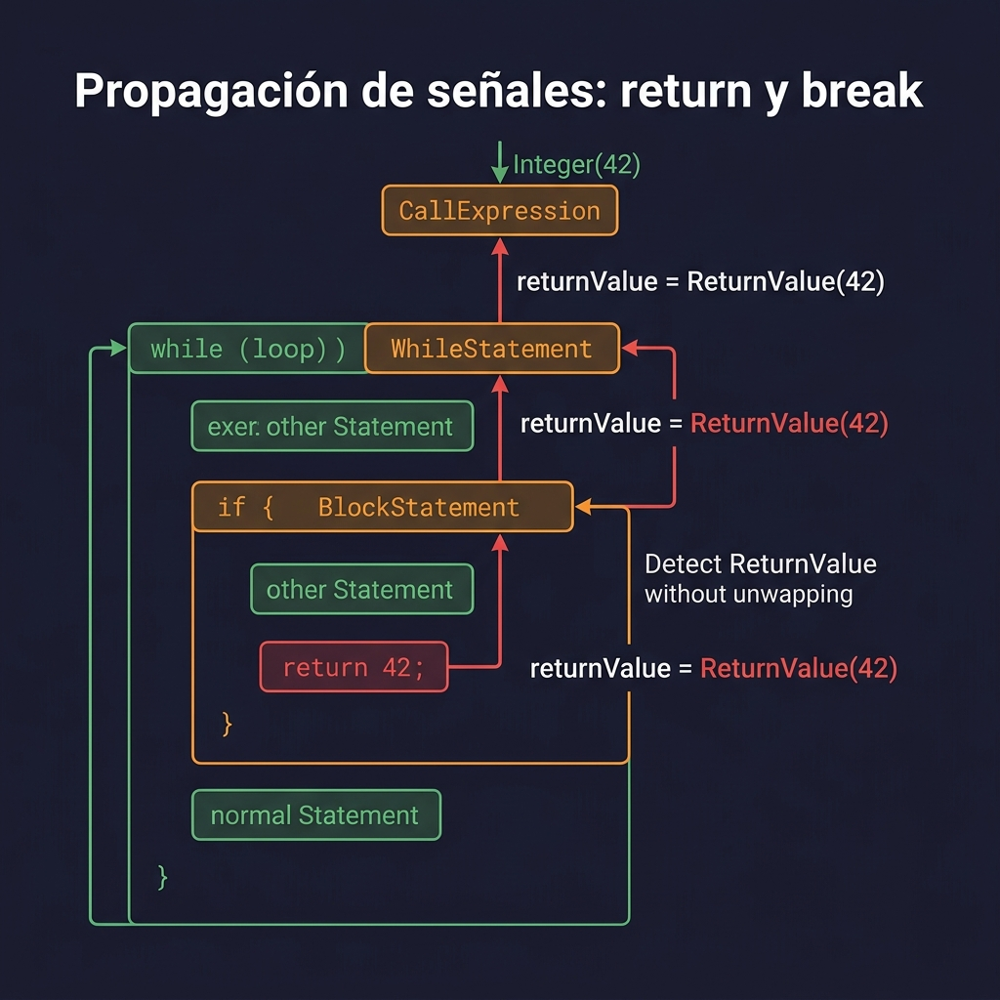
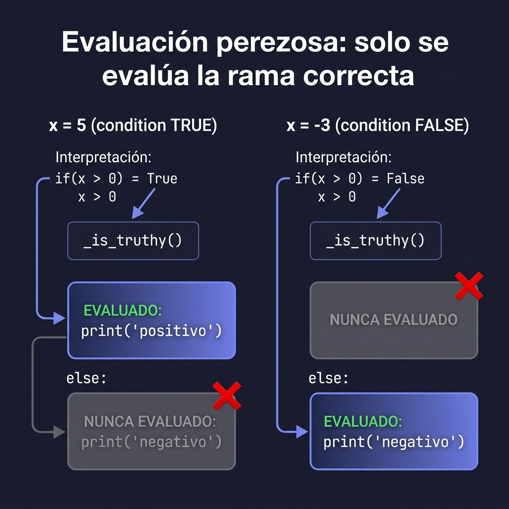

Respuestas técnicas con referencias al código fuente
+ debe sumar números o concatenar cadenas?La decisión no ocurre en el Lexer ni en el Parser. El Lexer solo genera un token PLUS y el Parser solo construye un nodo InfixExpression con operador "+". Es el Evaluador quien, en tiempo de ejecución, inspecciona los tipos de los operandos ya evaluados y despacha a la función correcta.
En evaluator.py, la función _evaluate_infix_expression() (línea 412) recibe el operador y los dos objetos ya evaluados. Luego usa una cadena de isinstance() para decidir:
# evaluator.py — líneas 419-433
def _evaluate_infix_expression(operator, left, right):
# Caso 1: ambos son enteros → aritmética entera
if isinstance(left, Integer) and isinstance(right, Integer):
return _evaluate_integer_infix(operator, left, right)
# Caso 2: al menos uno es float → aritmética flotante
if isinstance(left, (Integer, Float)) and isinstance(right, (Integer, Float)):
return _evaluate_float_infix(operator, Float(float(left.value)), ...)
# Caso 3: ambos son strings → concatenación
if isinstance(left, String) and isinstance(right, String):
return _evaluate_string_infix(operator, left, right)
// Suma numérica: ambos operandos son Integer
let resultado = 2 + 1; // → Integer(3) vía _evaluate_integer_infix
// Concatenación: ambos operandos son String
let saludo = "hola" + " " + "mundo"; // → String("hola mundo") vía _evaluate_string_infixPLUS y el mismo nodo InfixExpression producen operaciones distintas. La decisión la toma el Evaluador en tiempo de ejecución según el tipo (ObjectType) de los operandos evaluados.
📄 Archivo: evaluator.py — líneas 412-464
n de una llamada recursiva sobrescriba el n de otra?Mediante la creación de un nuevo Environment (entorno) por cada llamada a función. Cada entorno tiene su propio diccionario _store donde se almacena n de forma aislada.
# evaluator.py — _extend_function_env (línea 651)
def _extend_function_env(function, args):
env = Environment.new_enclosed(function.env) # Nuevo entorno hijo
for param, arg in zip(function.parameters, args):
env.set(param.value, arg) # n se guarda AQUÍ, en el entorno local
return env
Environment nuevo con new_enclosed(). Cada n vive en su propio _store, por lo que nunca se sobrescribe el de otra llamada.
📄 Archivos: evaluator.py líneas 651-676 · object_system.py líneas 282-369
2 ^ 3 + 1 en el AST?La precedencia se decide en el Parser, específicamente en el Pratt Parser (Top-Down Operator Precedence). Ni el Lexer ni el Evaluador participan en esta decisión.
| Nivel | Precedencia | Operadores |
|---|---|---|
| 1 | LOWEST | (base) |
| 2–3 | OR / AND | or, and |
| 4–5 | EQUALS / LESSGREAT | == != < > |
| 6 | SUM | + - |
| 7 | PRODUCT | * / % |
| 8 | PREFIX | -x !x |
| 9 | POWER | ^ |
| 10 | CALL | f(args) |
# parser.py — líneas 45-83
class Precedence(IntEnum):
LOWEST = 1
SUM = 6 # + y -
POWER = 9 # ^ ← ¡mayor que SUM!
PRECEDENCES = {
TokenType.PLUS: Precedence.SUM, # + tiene prec. 6
TokenType.POW: Precedence.POWER, # ^ tiene prec. 9
}La función _parse_expression(precedence) (línea 480) usa un bucle while: mientras el siguiente token tenga precedencia mayor que la actual, lo "absorbe" como operador infijo. Esto garantiza que ^ (prec. 9) se agrupe antes que + (prec. 6).
# parser.py — _parse_expression (línea 480)
def _parse_expression(self, precedence):
left = prefix_fn()
while precedence < self._peek_precedence():
left = infix_fn(left) # El operador más fuerte "atrapa" sus operandos
return left2 ^ 3 + 1
El ^ queda más profundo en el árbol (se evalúa primero), y el + queda como raíz (se evalúa después). Resultado: (2^3) + 1 = 9.
!!!!false: negaciones múltiplesPara el operador prefijo !, el Parser llama a _parse_prefix_expression() (línea 585), que recursivamente parsea la expresión de la derecha con precedencia PREFIX. Cada ! genera un PrefixExpression anidado:

📄 Archivo: parser.py — líneas 45-83 (precedencias), 480-529 (Pratt Parser)
return y break su señal a través de bloques anidados?El intérprete usa un patrón de "objetos señal" (sentinel objects): cuando encuentra un return o break, crea un objeto especial que se propaga hacia arriba por la cadena de evaluación sin ser "consumido" hasta llegar al nivel correcto.
| Señal | Clase | Se crea en | Se consume en |
|---|---|---|---|
return | ReturnValue | Línea 92: return ReturnValue(val) | Línea 624: _evaluate_call_expression |
break | _BreakSignal | Línea 112: return _BREAK | Líneas 301/343: dentro de while/for |
continue | _ContinueSignal | Línea 116: return _CONTINUE | Líneas 304/345: dentro de while/for |
Ejemplo: return 42; dentro de un if dentro de un while dentro de una función:
// Código fuente
let buscar = function(lista) {
while (i < 10) {
if (condicion) {
return 42; // ← aquí se genera ReturnValue(Integer(42))
}
}
};Cadena de propagación:
ReturnStatement → crea ReturnValue(Integer(42))_evaluate_block_statement (bloque del if) → detecta RETURN_VALUE, lo retorna sin desenvolver (línea 226)_evaluate_while_statement → detecta RETURN_VALUE, lo propaga (línea 307)_evaluate_call_expression → lo desenvuelve: return evaluated.value → Integer(42) (línea 624)# evaluator.py — _evaluate_block_statement (línea 210)
for statement in block.statements:
result = evaluate(statement, env)
if result is not None:
rt = result.object_type()
if rt == ObjectType.RETURN_VALUE or rt == ObjectType.ERROR:
return result # ¡Propaga SIN desenvolver!
if isinstance(result, (_BreakSignal, _ContinueSignal)):
return result # ¡Propaga señales de bucle!
_evaluate_block_statement propaga ReturnValue sin desenvolverlo. Solo _evaluate_call_expression (línea 624) hace el "unwrap" final. Esto garantiza que un return en cualquier nivel de anidamiento siempre salga de la función completa.
📄 Archivo: evaluator.py — líneas 36-48, 88-92, 210-232, 275-311, 575-627
if/else?A diferencia de A + B (donde se evalúan ambos operandos antes de operar), en un if/else el Evaluador usa evaluación perezosa condicional: evalúa la condición primero y, según el resultado, solo invoca evaluate() sobre el bloque correspondiente.
El nodo IfExpression (ast.py línea 437) almacena todas las ramas como nodos del árbol, pero el Evaluador decide cuál recorrer:
# ast.py — IfExpression
class IfExpression(Expression):
condition: Expression # La condición a evaluar
consequence: BlockStatement # Rama verdadera (if)
alternatives: List[tuple] # Ramas elseif [(cond, block), ...]
else_block: BlockStatement # Rama else (opcional)# evaluator.py — _evaluate_if_expression (línea 544)
def _evaluate_if_expression(node, env):
condition = evaluate(node.condition, env) # 1. Evalúa SOLO la condición
if _is_truthy(condition):
return _evaluate_block_statement(node.consequence, env) # ✅ Solo esta
# Si no, revisa cada elseif EN ORDEN
for alt_condition, alt_block in node.alternatives:
alt_val = evaluate(alt_condition, env)
if _is_truthy(alt_val):
return _evaluate_block_statement(alt_block, env) # ✅ Solo esta
# Si ninguna condición fue verdadera y hay else
if node.else_block is not None:
return _evaluate_block_statement(node.else_block, env) # ✅ Solo esta
return NULL
A + B| Expresión | Estrategia | Código |
|---|---|---|
A + B | Evaluación eager: evalúa A y B antes de sumar | left = evaluate(node.left)right = evaluate(node.right)return left + right |
if/else | Evaluación condicional: evalúa la condición y solo una rama | if _is_truthy(cond): return evaluate(consequence)Las demás ramas nunca se tocan |
_evaluate_block_statement() sobre la rama cuya condición fue verdadera. Las ramas falsas nunca son visitadas por evaluate(), por lo que su código jamás se ejecuta.
📄 Archivo: evaluator.py — líneas 544-572 · ast.py — líneas 437-476
Lenguaje LauraSeFue — Compiladores 2026
Documento generado con referencias al código fuente del intérprete